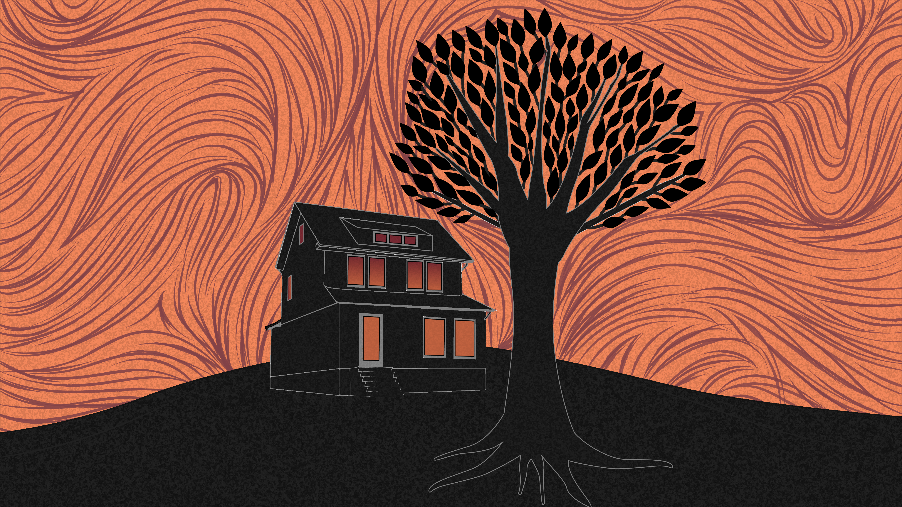
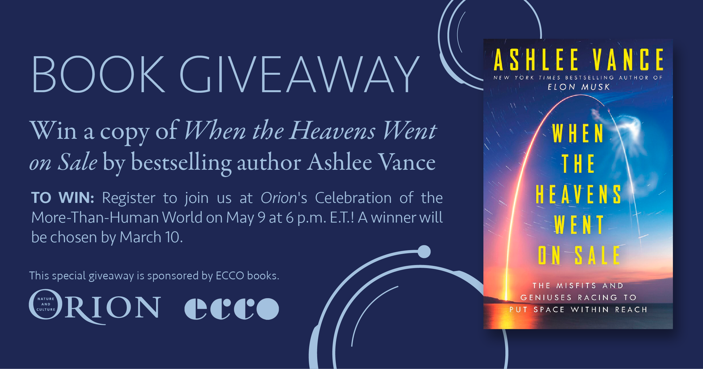
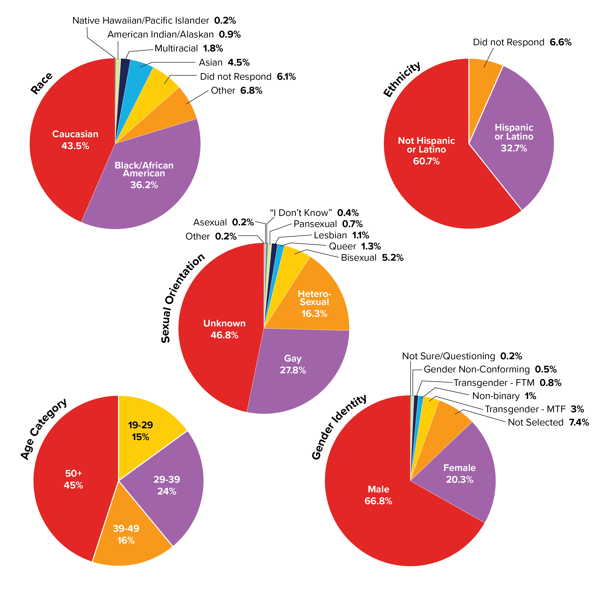

-
Kyla McCallum
is a student of New Media and Digital Design in NYC. She has two years of internship experience in communications and community engagement, with a special focus on graphic design and value-centered strategic thinking. When not tinkering away in Adobe Illustrator, she is probably reading.
Illustration

The final assignment of Kyla’s Graphic Design and Digital Tools class was to redesign a book cover of her choice. Kyla decided to redesign The Winter of the Witch by Katherine Arden. She created this cover in Adobe Illustrator using a Wacom tablet to add texture. The typography of the title and the author’s name was created from scratch using her hand lettering skills.

The graphic above was an assignment for Kyla's Graphic Design and Digital Tools class. Each tile was created in Adobe Illustrator to admire the work of costume designer Alexandra Byrne.

This editorial illustration is for the online article, Nature Writer's to the Rescue! published by Orion magazine. The article is about a forest fire that burns a young girl's home. Kyla references this forest fire with the red/orange background, which she created using a Wacom tablet.
Graphic Design

This graphic was completed for a summer internship in the communications department of the Holland Museum. Interns across all departments of the museum collaborated to plan a small exhibition in the front lobby of the Museum; this graphic is marketing the opening of the exhibit, titled Greetings from Holland, Michigan: Origins and Impact of the Local Post Office. All design work displayed here was created independently by Kyla.

This graphic was for the Gay Men’s Health Center (GMHC). Kyla worked with the director of Women’s Services to create a tag line and an accompanying visual. The women were illustrated independently using sketches made on paper.

Kyla designed this graphic for a book giveaway by Orion Magazine. The book, When The Heavens Went On Sale, inspired the circular elements of this design, which look vaguely technological in order to subtly reference the author's discussion of space travel.
Layout & Data Visualization


The Observer is Fordham Lincoln Center’s online and print newspaper, publishing biweekly. As the Assistant Layout Editor, Kyla was responsible for print layout. She primarily worked on the Fun & Games section of the newspaper, embracing fun graphics and bright color palettes. Above are two of her favorite layouts from her time on The Observer editorial board.

Data visualizations created for the Gay Men's Health Center to share data about the demographics and needs of their clients. Kyla developed the pie charts in RawGraphs using aggregated data, then improved their design in Adobe Illustrator.